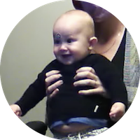
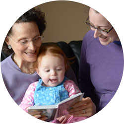

|
 |  |
 |
 |
Bergelson Lab
Duke CHILD Studies
The Bergelson Lab (aka BLAB) is a part of the Child and Infant Learning and Development (CHILD) Studies group within the Department of Psychology and Neuroscience at Duke University. We are located in Room 114 of the Reuben-Cooke building.
We study infant word learning, in particular how infants’ early linguistic and environmental input plays a role in their learning. We focus on understanding how babies learn words from the visual, social, and linguistic world around them.
The BLAB moved to Duke in 2016 from the University of Rochester, where it finished data collection in July 2016 for a longitudinal study called SEEDLingS
(Study of Environmental Effects on Developing Linguistic Skills). You can read more about that work here.
If you would like to participate in more online studies conducted by researchers like us all over the world, check out listings on the Children Helping Science website!
Find details of our commitment to Diversity, Equity, and Inclusivity at the following links: